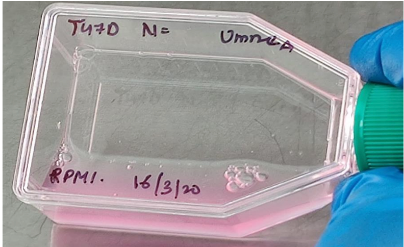

Oncology Research & Natural Therapeutics
Impact of Crocus sativus on Breast carcinogenesis
Investigated the cytotoxic effects of saffron on breast cancer cell lines. Conducted time and dose-dependent studies and calculated LD50 values for therapeutic benchmarking.
Impact: Quantified evidence-based research for natural anti-carcinogenic deterrents in oncology.